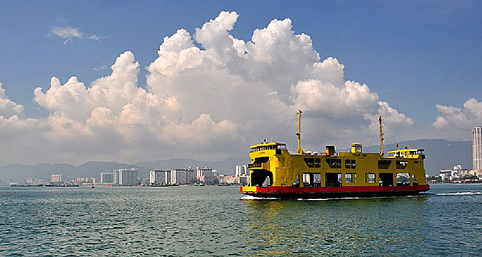

Set up to promote, market and generate tourism for the Penang State in Malaysia, Penang - Your Tourism Destination is a tourism bureau which serves as a focal point for coordinating all tourism activities. We coordinating all tourism activities and we also works closely with various key tourism industry players locally and abroad. We participates in overseas sales missions at worldrenowned trade shows, and the exposure has contributed to Penang’s popularity as a destination, investment and home of choice for many from around the world.
Before You Go
Penang Island is a 15 to 20-minute ferry ride from mainland Penang on the Malaysian Peninsula. There are two bridges connecting the island to the mainland, namely Penang Bridge and the Second Penang Bridge (Sultan Abdul Halim Mu’Adzam Shah Bridge). Penang International Airport sees incoming flights from many international destinations, such as China, Hong Kong, Singapore, Thailand, Indonesia, Taiwan, Vietnam and Qatar. Langkawi Island is a 2-hour-45-minute ferry ride away, or a short 35-minute flight. Malaysia’s capital Kuala Lumpur is a 50-minute flight away, or can alternatively be reached by a 4-hour train or car ride.
Holiday Outfit
As Penang has a tropical climate, it is advisable to wear cool clothing. It is usually sunny, but the heat is moderate and still comfortable to walk around outdoors. Shopping malls and restaurants are equipped with air-conditioning so you may want to carry along a light cover-up. If you are attending a formal function, a western-style suit or a batik shirt for men is acceptable. To be safe, check with your host before the event. It is a requirement to dress modestly when visiting places of worship. Mosques will often prepare appropriate cover-ups for tourists. Shoes should also be removed when entering places of worship.
Have a small umbrella on hand when you’re planning outdoor activities, and always carry a bottle of water to keep hydrated amid all that excitement. Do keep in mind that it is not advisable to drink tap water directly.
Travel Tips
The Malaysian Immigration laws require that every person entering Malaysia must possess a valid passport with more than six (6) months validity from the date of entry into Malaysia, so do check your passport before you plan your travels.
Electrical sockets in Malaysia supply electricity between 220 and 240 volts. You will need a type G socket adapter in order for your plugs to be compatible for use in Malaysia.
Local Languages
The official language of Malaysia is Malay, but many l ocals are proficient in English as well. Most Penangites are competent in more than two languages. Almost all Chinese speak ‘Penang Hokkien’ which is unique because of the blend of Chinese with many ‘adopted’ Malay words and some English words. Penangites’ most common greeting is “Dah makan kah?” (Malay), “Chiak pa boi” (Hokkien), “Saptacha” (Tamil) which literally means “Have you eaten?”.